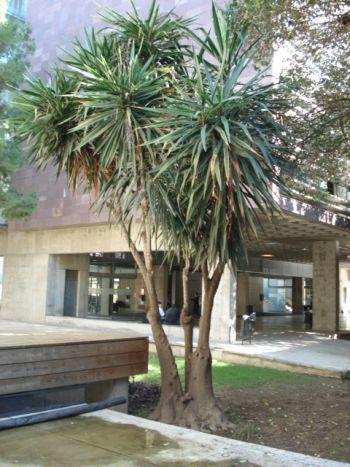
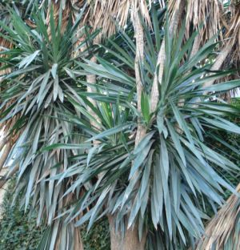

Flora ornamental del Campus de Reina Mercedes,
Universidad de Sevilla. Ficha nº 68 -
Versión 2
|
Yucca
gigantea Lem. in
Beih. Bot. Centralbl., Abt. 1. 50: 446 (1933)
Yucca
elephantipes Linding., nom. illeg.; Yucca
guatemalensis Baker
|
|
| Yuca pata de elefante, yuca
gigante, izote (en América) |
Arbusto palmiforme |
| Arbusto palmiforme, perennifolio, con
tallo de hasta 10 m, ramificado, ensanchado en la base,
cubierto por las cicatrices de las hojas caídas, de color
pardo grisáceo. Hojas simples, alternas, dispuestas en roseta apical, sentadas, de 50-100 cm x 5-7 cm, enteras, acintadas, con el margen fibroso o algo denticulado, base atenuada y punta más o menos punzante, de color verde oscuro. Inflorescencias en panícula apical. Flores hermafroditas, péndulas; periantio petaloideo, acampanado, con 6 tépalos soldados en la base, de color blanco-crema; 6 estambres; ovario súpero, con tres carpelos. Fruto cápsula, indehiscente, con semillas comprimidas de color negro. |
 Fotos:
|
 |
Observaciones.- El nombre Yucca proviene del nombre caribeño de la raíz de la mandioca. La flor, el izote, es la flor nacional de El Salvador. Los brotes tiernos y las flores se consumen como verdura. Otras especies que alcanzan gran tamaño pueden confundirse fácilmente con esta. |
|
Área de origen.- México y Guatemala |
|
|
Uso en el campus: varios ejemplares como arbustos ornamentales |
Localización.- Escuelas de Arquitectura: Patio interior y Jardín perimetral
|
|
Paloma Cañado Fernández & Carlos Romero Zarco (2007) |
|